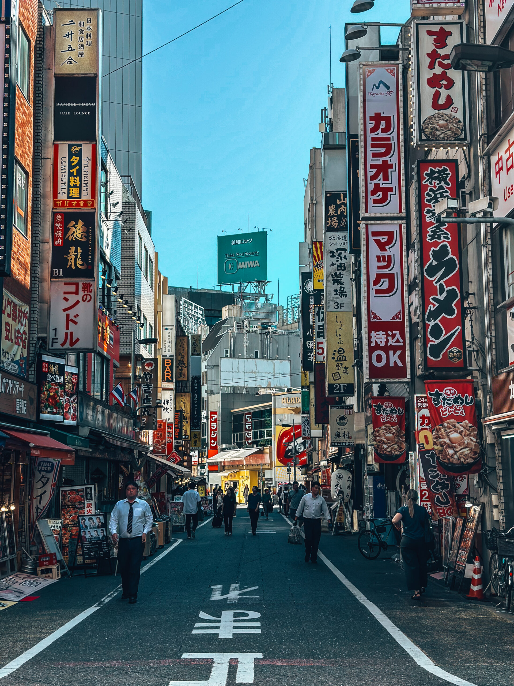
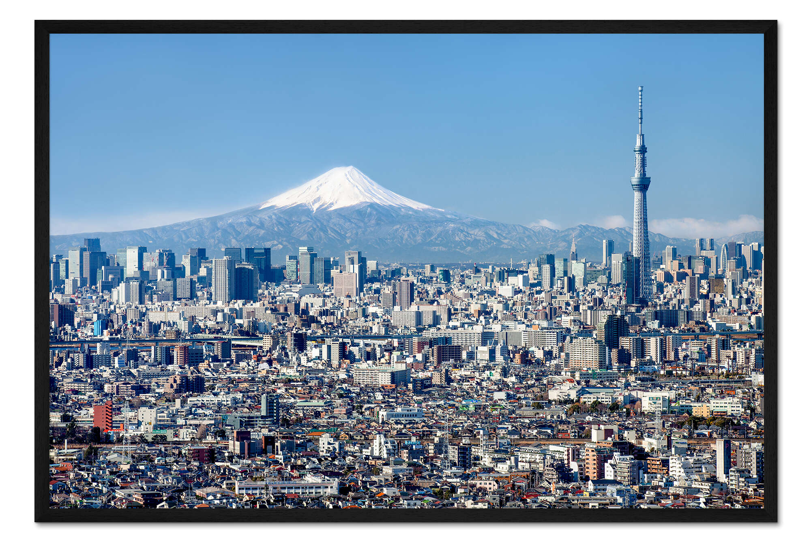
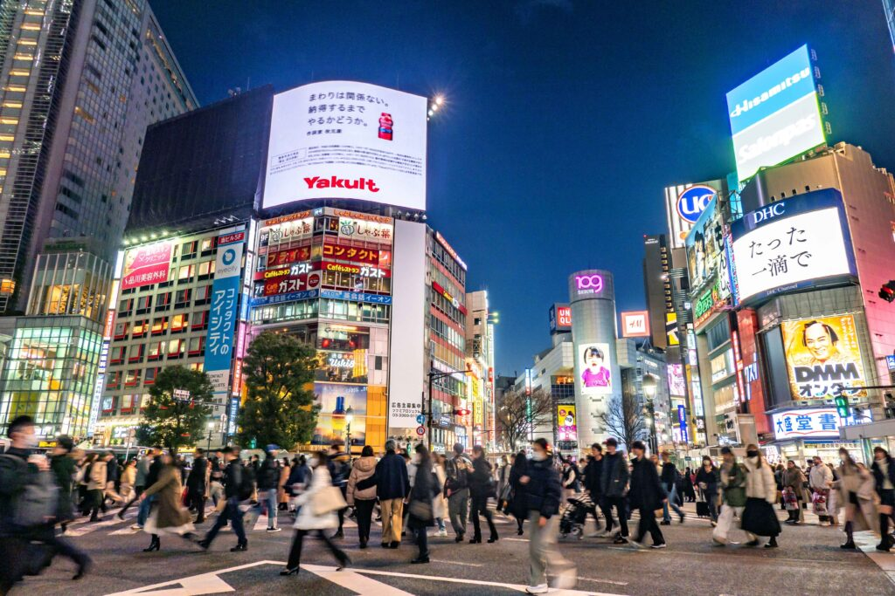

Hvorfor Tokyo?
Tokyo er en ekstremt spennende og vakker by som er det komplett motsatte fra det jeg har her hjemme.
Jeg har alltid ønsket å oppleve en storby slik som Tokyo, spesielt om natten når byen lyser opp med vakre neonskilt.
3 ting du må oppleve
1. Besøk Shibuya-krysset, et av verdens mest travle veikryss, og opplev den unike atmosfæren.
2. Ta en tur opp Fuji-san og utforsk området rundt.
3. Dra til Tokyo Tower eller Tokyo Skytree for å få en fantastisk utsikt over byen, spesielt om natten når byen lyser opp.

Om Tokyo
Tokyo er hovedstaden i Japan og en av verdens mest befolkede byer med 38 millioner innbyggere.
Byen er kjent for sin unike blanding av tradisjonell kultur og moderne teknologi.
Samt regnes Tokyo som en av de tryggeste byene i verden, med lav kriminalitet og høy levestandard.

Generell informasjon
- Språk: Japansk
- Valuta: Yen
- Beste reiseperiode: Vår (Mars - Mai) eller Høst (September - November)

Tips om du reiser
- Bruk offentlig transport, spesielt tog og t-bane, som er effektiv og pålitelig.
- Besøk populære turistattraksjoner som Tokyo Tower, Senso-ji-tempelet og Shibuya-krysset.
- Prøv lokal mat som sushi, ramen og tempura.
- Lær noen grunnleggende japanske fraser for å gjøre opplevelsen mer hyggelig.
- Respekter lokale kvanter og tradisjoner.
- De kjente Kirsebærblomstene har en kort blomstrings periode om våren,
vær oppmerksom at det vil være mange turister på den tiden av året. - Japanske turist organisasjon